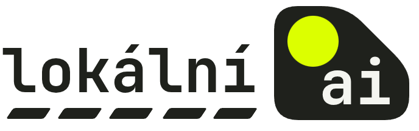

⁄Vyjmenovaná slova15 models listed the vyjmenovaná slova as JSON, 5 times each (the OpenRouter models once), with reasoning off and on. Among them, Gemini 4 Argon (closed weights) leads with F1 0.93 with reasoning on; the next best model, GPT-6.1 Terra (closed), reaches 0.84. Lists are scored against the 99 items outside brackets in ÚJČ's Přehled vyjmenovaných slov (84 words and 15 proper names).
Mean over 5 runs (OpenRouter models: 1). Reasoning is capped at 32k tokens, then the model has to answer; the OpenRouter models reason at high effort within 48k output tokens and can't be cut off at the cap.
Precision counts ÚJČ's bracketed derived words as wrong; lenient precision leaves them out. An answer without parseable JSON scores 0. Reasoning tokens are the median with reasoning on.
| model | F1 off | F1 on | recall on | precision on | lenient on | reasoning tokens | forced answers | no JSON |
|---|---|---|---|---|---|---|---|---|
| Gemini 4 Argon | – | 0.93 | 0.94 | 0.92 | 0.99 | 12.3k | 0/1 | 0/1 |
| GPT-6.1 Terra | 0.80 | 0.84 | 0.78 | 0.92 | 1.00 | 5.9k | 0/1 | 0/2 |
| Muse Spark Open | – | 0.83 | 0.77 | 0.90 | 0.97 | 8.0k | 0/1 | 0/1 |
| Claude Opus 5.5 | – | 0.82 | 0.75 | 0.91 | 1.00 | 2.5k | 0/1 | 0/1 |
| DeepSeek V4.1 Flash | 0.40 | 0.76 | 0.73 | 0.81 | 0.92 | 32.0k | 0/5 | 0/10 |
| Mistral Large 4 | – | 0.36 | 0.27 | 0.52 | 0.64 | 18.8k | 0/1 | 0/1 |
| Kimi K3.1-Pro | 0.10 | 0.30 | 0.26 | 0.38 | 0.44 | 12.4k | 0/5 | 2/10 |
| GPT-OSS-120B | – | 0.19 | 0.14 | 0.38 | 0.44 | 32.0k | 3/5 | 0/5 |
| Qwen3.8-Flash-Next | 0.01 | 0.09 | 0.07 | 0.16 | 0.19 | 32.0k | 5/5 | 5/10 |
| Gemma-4-31B | 0.00 | 0.03 | 0.02 | 0.07 | 0.07 | 10.3k | 0/5 | 0/10 |
| Gemma-4-E4B | 0.00 | 0.02 | 0.01 | 0.04 | 0.04 | 1.0k | 0/5 | 0/10 |
| Gemma-4-26B-A4B | 0.00 | 0.01 | 0.00 | 0.03 | 0.03 | 20.6k | 0/5 | 2/10 |
| Qwen3.8-27B | 0.01 | 0.00 | 0.00 | 0.00 | 0.00 | 32.0k | 5/5 | 1/10 |
| Qwen3.6-35B-A3B | 0.00 | 0.00 | 0.00 | 0.00 | 0.00 | 13.3k | 0/5 | 2/10 |
| Tiny Aya Global | 0.00 | – | – | – | – | – | – | 3/5 |
All metrics, recall by letter, every word and every run with its reasoning trace are in the full viewer.